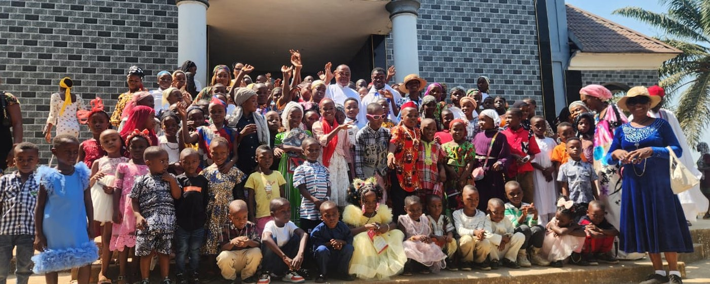

CORA Farms Nigeria Ltd
Our registered farming company, founded in 2015: crops, poultry and livestock, and a training ground for rural farmers.


Getting a good education as a child is the essential building block of a tolerant, well-adjusted, healthy and prosperous adult. Families where parents completed primary and secondary school have higher incomes, better health and longer lives — and pass all of it on.
What we run today
The schools and clinics we founded are being handed to the institutions that will run them from 2027 — see our track record. These are the programmes CORAfrica runs day to day, alongside our Community Education Centres, each one answering a different reason a child stops coming to class.
A child’s poverty should not decide whether that child is educated. HELP-A-KID pays the fees, and the costs around them, for acutely underprivileged children, so that they can finish the education they have already started.
Read more → FamiliesWhen a family cannot afford to keep a child in class, the barrier is income. The Economic Empowerment Programme lends to the parents — interest-free — so that a business can grow into school fees.
Read more → HealthA child too ill to learn is not being educated. Our clinics sit inside the school system: free to the children who study there, and affordable to everybody else in the community.
Read more → AgricultureAgriculture on the timetable rather than in a textbook. Pupils work a real farm through a real season, and leave school with a skill that feeds a family.
Read more → SkillsWe go a step beyond the conventional school system, and equip our schools so that a student leaves with a certificate. Each centre runs pilot systems where students practise the skills that will sustain them for life.
Read more →Our registered farming company, founded in 2015: crops, poultry and livestock, and a training ground for rural farmers.
Our next Community Education Centre, recently begun, in New Karu, Nasarawa State, near Abuja. About US $2 million will complete it.


Why it matters
We work where poverty, insecurity and displacement meet — which is exactly where children are the first to lose their education.
Nigerian children are out of school — about 15% of the world’s total, according to UNICEF.
Nigerians were counted as multidimensionally poor in the country’s 2022 national survey.
Many rural communities live with violence, including attacks by herdsmen and militant groups in Nigeria. Across the border, the conflict in Cameroon has driven refugees into Cross River State.
Education
We build and equip primary and secondary schools in rural areas, creating sustainable livelihoods for indigent children and preventing the poverty, abuse and exploitation that follow when a child is out of school.
Conventional schooling, run properly — small classes, quality instruction, and preparation for an increasingly globalised world.
Children are encouraged to grow academically, personally and spiritually, in an environment of curiosity, creativity and enthusiasm.
Our educational component runs from primary through secondary to tertiary support and vocational skills acquisition.
VASAC
We go a step beyond the conventional school system and equip our schools so that students leave with a trade. Each centre runs pilot systems where students practise the skills that will sustain them for life — computing, fashion design, beauty and aesthetics, home economics, music, technical drawing, visual arts, the building trades and agriculture.
Healthcare
We establish health clinics inside the school system, and teach healthcare awareness and sanitation as part of school life. We place particular emphasis on preventing and treating diarrhoeal disease and malaria in children under five, and on the first 1,000 days of life. Our investment extends to the health of their mothers.
Preventive care, combating malnutrition, and community education on preventing the transmission of HIV.
A growing team providing health education and accompanying families through the process of seeking care.
Practical hand-washing hygiene, toilets, and water collection and treatment — taught in school, extended into the community and to refugee settlements.
What we believe
Every child has the right to a standard of living adequate for their health and well-being.
Every child has the right to learn how to work, to free choice of employment, to just and favourable conditions of work, and to protection against unemployment.
Everyone, without discrimination, has the right to equal pay for equal work.
Everyone who works has the right to remuneration that ensures an existence worthy of human dignity for themselves and their family.